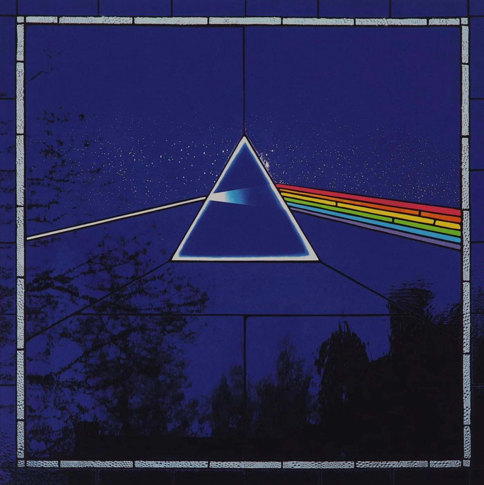
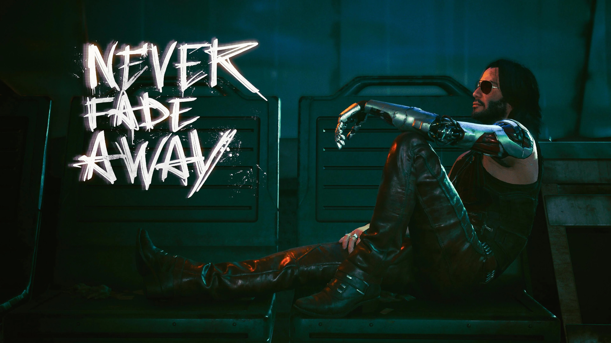
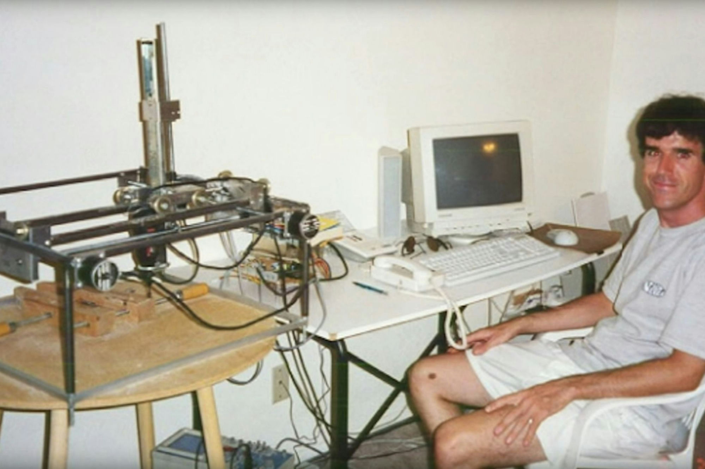

sidharthify@nixos
~
$
whoami
sidharth! full-stack systems & android developer
i work across the whole stack, from the AOSP framework and linux kernels up to the native apps and UI people use, with FastAPI backends and scripts in between.
- aosp framework
- yaap & cipherOS maintainer · device bring-up, including the xiaomi pad 8 from scratch · understanding of the build system · HALs
- low level
- syd, my pixel 7 and xiaomi pad 8 kernel · a 20-year-old c++ engine ported to arm64 · hands on experience with MediaTek BROM exploits · contributions to low-level repos
- linux
- nixOS daily, fully declarative · kernel and rom build tooling
- app development
- breathe for android (kotlin, compose) and iOS (swift, swiftui)
- ui
- material 3 and swiftui clients, plus this whole website, no frameworks
- fastapi
- the breatheOSS api: live CPCB and US EPA AQI from our own sensors
- scripting
- bash and python: rom and kernel build scripts, syd for nixpkgs
sidharthify@nixos
~
$
hyfetch
sidharthify@nixos
-----------------
OS: NixOS 26.11 (Zokor) x86_64
Kernel: Linux 7.2.8-cachyos
Display (VX2758A-2K): 2560x1440 in 27", 185 Hz [External]
DE: KDE Plasma 6.7.5
Font: Inter (10pt) [Qt], Inter Medium (10pt) [GTK2/3/4]
CPU: 12th Gen Intel(R) Core(TM) i5-12400F (12) @ 4.40 GHz
GPU: AMD Radeon RX 9060 XT [Discrete]
Memory: 8.85 GiB / 31.17 GiB (28%)
Disk (/): 604.46 GiB / 915.32 GiB (66%) - ext4
there is no dark side to the moon, really. matter of fact, it's all dark.
sidharthify@nixos ~ $ cat about.md
i like low level systems and embedded programming. i tinker with android (aosp) and linux. i run nixOS on my main PC. i occasionally ship roms, write bash scripts and live in the UNIX terminal.
sidharthify@nixos ~ $ ls ~/projects
- breatheOSSlead dev & maintainer. an open-source, community-driven air quality network for Jammu & Kashmir and Ladakh: our own AirGradient sensors in jammu, srinagar and rajouri backed by satellite models, a FastAPI backend computing indian (CPCB) and US EPA AQI, android, iOS and web clients, a discord bot, an open data repository and a governance charter. breatheoss.app
- breatheForecasterseven day PM2.5 / PM10 / AQI forecaster for the breatheOSS network, pure standard-library python. forecasts are published nightly before the days happen and graded in public afterwards
- yaap (yet another aosp project)maintainer / contributor
- cipherOSmaintainer
- device trees & portsnothing phone 2a/2a+, realme 8i / narzo 50 4g, realme 9 5g SE, pixel 7 / 7 pro — maintainer, co-lead, contributor, tester
- xiaomi pad 8 bring-upaosp device bring-up from scratch: device tree, vendor and kernel, with syd as its kernel
- syd (kernel)my custom android kernel for the pixel 7 (ported to linux 6.12) and the xiaomi pad 8
- lineageos contributionsrewriting legacy hidl hardware abstraction layers to aidl, building kernels
- nixos + homelaba modded minecraft server run as a systemd service, with a discord bot that starts it on request and stops it by in-game majority vote, ipv6 ddns, a playit tunnel and daily backups. sunshine for game streaming
- cwr engine port (arma cwa)ported a 20-year-old game engine to android arm64 with a custom opengl es 3.2 backend
- syd (nixos)lightweight command-line tool for nixOS. unrelated to the syd kernel, just the same name
- stillAlive-Cthe portal ending credits recreated in pure c for the terminal: typed-out text, ascii art and audio in sync, scaled to any window at 4:3
- ladsavesave editor in c for yakuza: like a dragon on linux. reverses the xor + crc32 save format and splices bytes in place so the rest of the save stays untouched
- bcstm2wavbatch converts nintendo 3ds .bcstm audio to .wav, written in c
sidharthify@nixos ~ $ ls ~/skills
- c & modern c++engine rendering backends, kernelspace c, aosp c++, custom math libraries
- python and bashfile manipulation and some scripting
- graphics programming & glslopengl es 3.2, custom vertex/fragment shaders, rewriting fixed-function pipelines
- gitgeneral knowledge and familiarity
- linuxgeneral commandline knowledge
- aospdevice trees, HALs (aidl/hidl), soong, android.bp, overlays, fastboot, adb
- nix/nixOSflakes, the distro and the nix language itself
- css/html/javascriptenough to make this website, and contributions to yaaprom.org. no frameworks
- kotlinandroid frameworks
sidharthify@nixos
~
$
type help to look around. try ls, projects, cat about.md, cd blog.
things i love


